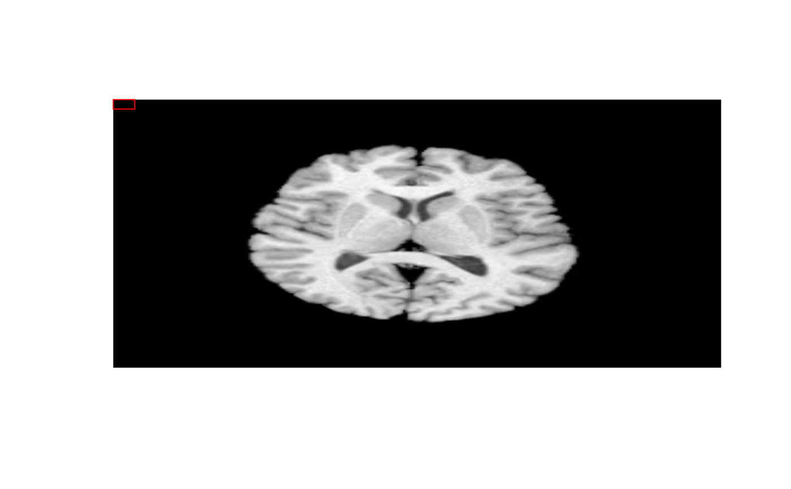
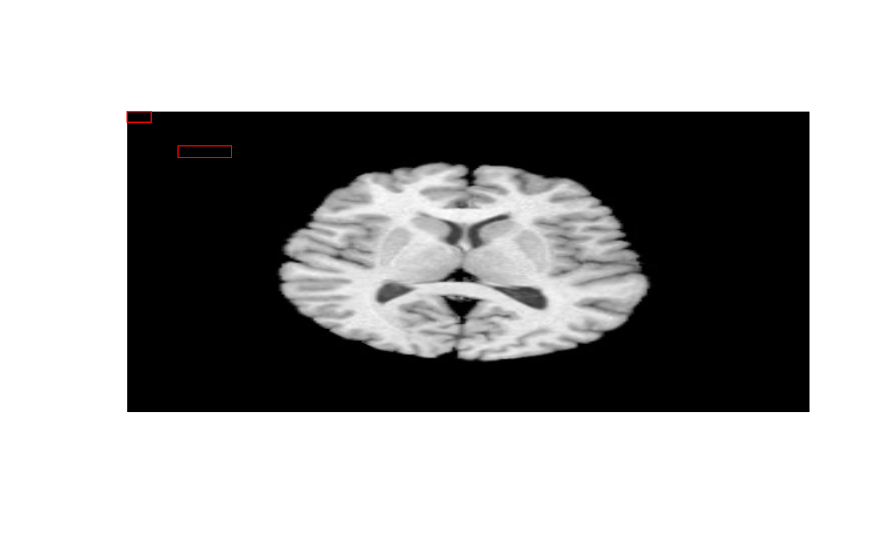

R/ssdUtilities.R
drawRectangles.RdRenders boxes on objects within rasterized images.
drawRectangles( image, boxes, boxColors = "red", confidenceValues = NULL, captions = NULL )
| image | standard image using something like jpeg::readJPEG. |
|---|---|
| boxes | a data frame or comprising where each row has the format: xmin, xmax, ymin, ymax. |
| boxColors | Optional scalar or vector of length = |
| confidenceValues | Optional vector of length = |
| captions | Optional vector of length = |
jpg = ANTsRCore::getANTsRData("r16") if (requireNamespace("jpeg", quietly = TRUE)) { image = jpeg::readJPEG(jpg) vec2d = c(1, 10, 1, 10) drawRectangles(image, vec2d) vec2d = rbind( c(1, 10, 1, 10), c(20, 40, 30, 40) ) drawRectangles(image, vec2d) }